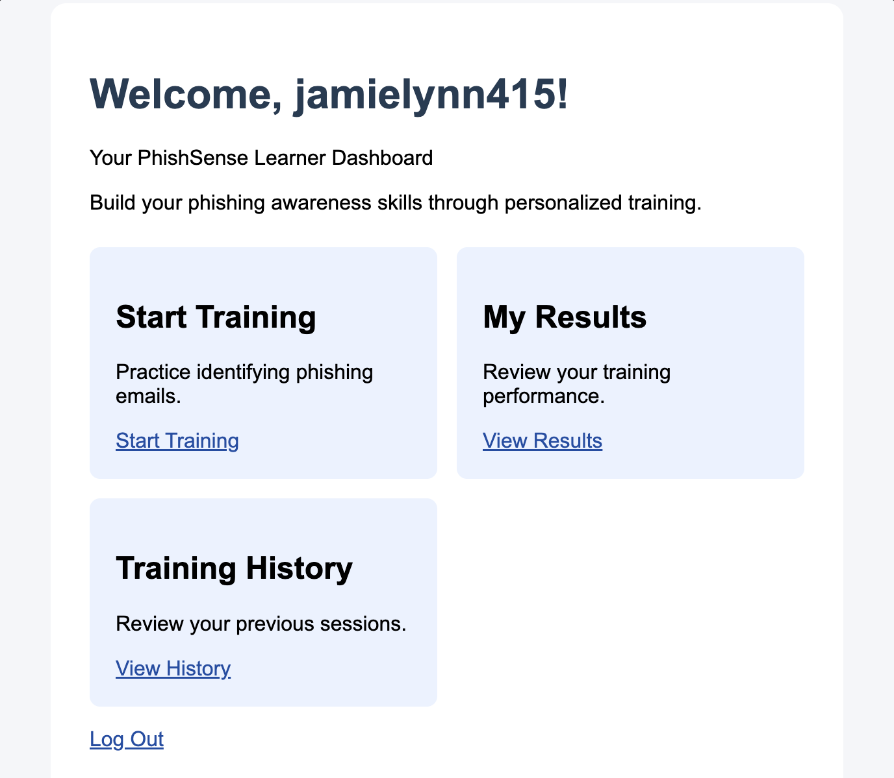
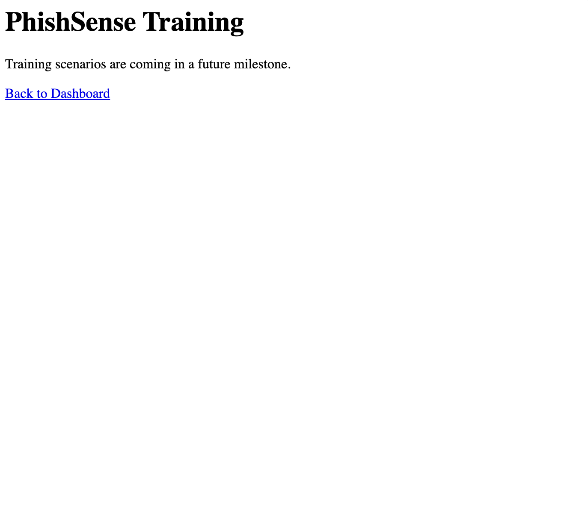
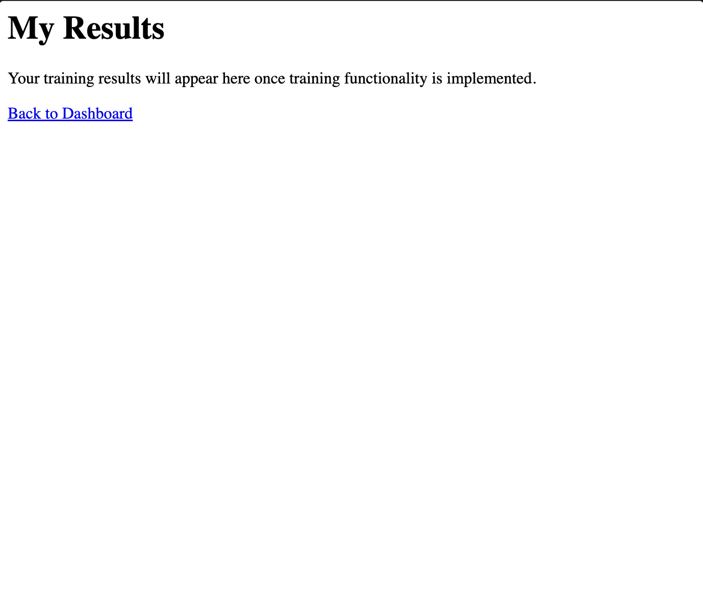

Building the Foundation of PhishSense
Author: Jamie Alexander
Date: October 25, 2026
Project: PhishSense – Adaptive Phishing Awareness Training System
This month marked the beginning of the development phase of my master's capstone project, PhishSense. The project combines my background in cybersecurity with my ongoing studies in computer science to explore how adaptive learning can improve phishing awareness training.
My primary focus was transitioning from research and planning into the initial implementation of a functional web application. This included establishing the application's architecture, developing user authentication, creating the learner dashboard, and preparing the foundation for future training functionality.
Project Overview
PhishSense is a web-based phishing awareness training platform designed to help users recognize suspicious emails through interactive learning scenarios.
The planned system will adjust training difficulty based on individual performance, allowing users to receive increasingly challenging scenarios as their recognition skills improve. The project will also explore whether adaptive training produces different learning outcomes compared with a fixed-difficulty approach.
Features Developed This Month
1. Application Architecture and Database
I established the initial application structure using Python, Flask, SQLite, and HTML. Flask handles application routing and communication between the user interface and the application's underlying functionality.
SQLite provides a lightweight relational database for storing application data. Establishing the database and project structure created a foundation for future participant management, training sessions, and performance tracking.
2. User Registration and Login
I implemented the initial registration and login functionality, allowing users to access the application through individual accounts. This functionality establishes the groundwork for associating future training activity with specific users.
3. Learner Dashboard
I developed a learner dashboard that provides navigation to training scenarios, results, and training history. The dashboard serves as the central interface users will interact with after logging into PhishSense.
Development Screenshots
The following screenshots document the current application interface and demonstrate the progress made during the initial development phase.



Development Tools and Resources
Throughout this month, I used several technologies and development tools to establish the foundation of PhishSense.
- Python: Primary programming language.
- Flask: Web application framework and routing.
- SQLite: Relational database management.
- HTML and CSS: User interface structure and styling.
- Visual Studio Code: Application development and testing.
- Git and GitHub: Version control and project documentation.
Challenges Encountered
One of the main challenges this month was transitioning from the planning and research stages into actual software development. While the initial application structure was relatively straightforward, determining how to organize the system to support future adaptive learning functionality required additional consideration.
Another challenge involved managing the project's scope. PhishSense is intended to include adaptive training, performance tracking, and interactive phishing scenarios. Attempting to implement every feature simultaneously would make development and testing more difficult.
To address this, I adopted an incremental development approach. I focused first on establishing the application structure, authentication, navigation, and database before implementing more advanced training functionality.
Monthly Retrospective
What Went Well?
I successfully moved PhishSense from a conceptual research project into an initial working web application. Completing the registration and login functionality, establishing the database, and creating the learner dashboard provided a foundation for future development.
I also made progress in defining the project's research methodology and preparing documentation for the proposed evaluation of adaptive phishing training.
What Could Have Gone Better?
Balancing project development with other academic, professional, and personal responsibilities made time management challenging. Some tasks required more time than initially anticipated, particularly when translating design concepts into functional application components.
Additionally, several planned features remain in development. The training, results, and history pages currently serve as placeholders rather than fully implemented components.
How Will I Improve Moving Forward?
Moving forward, I plan to divide development into smaller, measurable tasks and prioritize features necessary for the research evaluation.
My next steps include implementing simulated phishing scenarios, developing the performance-based difficulty adjustment system, and preparing the application for future usability testing.
I will also continue using advisor feedback and version control to document progress and refine the application's design.
Looking Ahead
October established the technical foundation of PhishSense. Although significant development remains, the application now has an initial structure that can support additional functionality in upcoming milestones.
My next development priorities are implementing the interactive phishing training experience, recording user responses, and creating the logic required to support adaptive difficulty.
As development progresses, I will continue documenting technical decisions, challenges, and improvements through this professional portfolio.
← Back to Portfolio